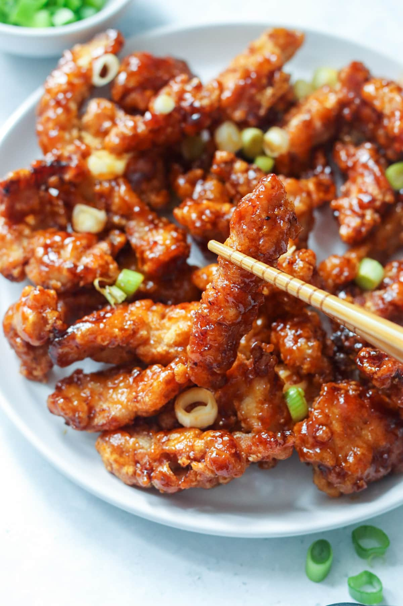

Crispy Shredded Chicken Recipe

A personal favourite of mine, the chicken is spicy with a slight crips to it, while the coating is sweet, sour, and sticky. Let's get right into it.
Ingredients
- Chicken Breast
- Honey
- Pineapple Juice
- Brown Sugar
- Soy Sauce
- Malt Vinegar
- Ground Ginger
- Ground Garlic
- Ketchup
- Cornflour
- Chilli Powder
- Cumin
- Jerk
- Ground Pepper
Instructions
- Chop the chicken breast into thin strips. Pan fry the chicken strips until
they are cooked through.
- While the chicken is cooking, mix the honey, pineapple juice, brown sugar,
soy sauce, vinegar, ginger, garlic, ketchup, and cornflour together.
- Sprinkle seasoning to taste on the chicken while it cooks. Include Cornflour.
- Pour cornflour in sauce, then drizzle over the chicken while it finalises cooking.
- Bon apetit!
Back to homepage